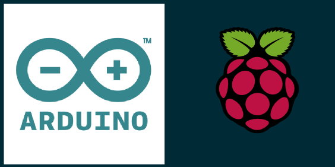
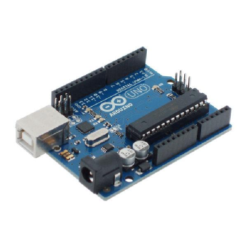
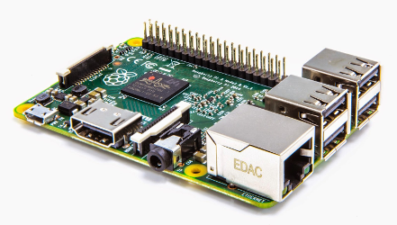
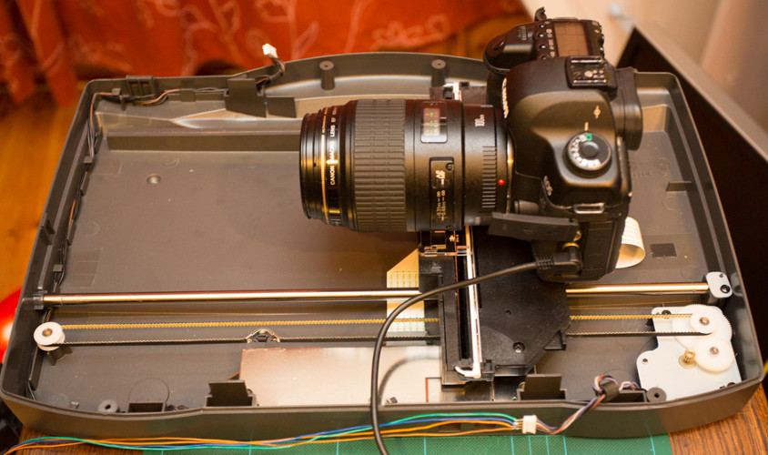
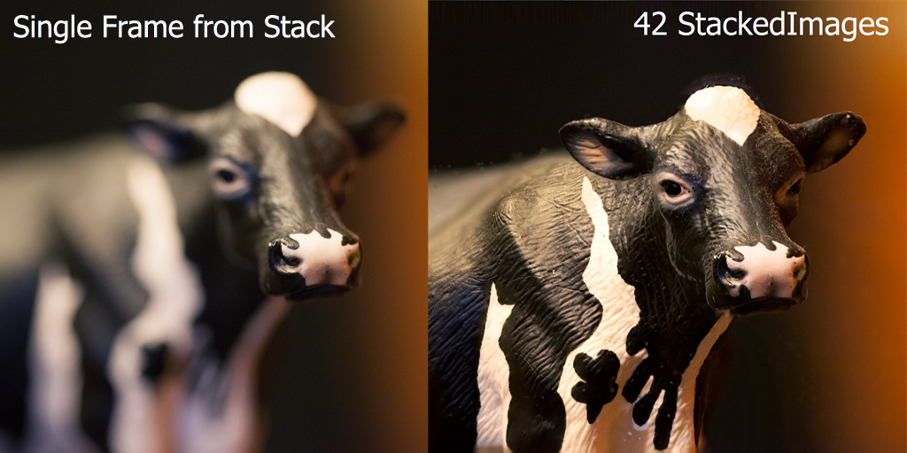
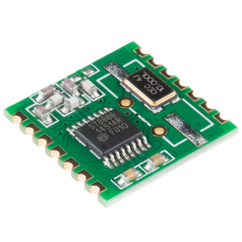
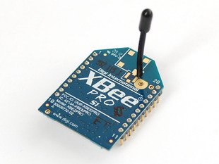

Arduino & Raspberry Pi

Marvin Reich
Summerretreat 2015
structure
- history & facts
- what to know first
- what do you need?
- what can you do with it?
- approaching a project idea
- ..so what is possible?
- pi stuff
- your project ideas / brainstorming
- where to start..?
history & facts
arduino
- started in 2005
- project for students at Interaction Design Institute Ivrea (Italy)
- the idea was to design a easy-to-use computer for a non-technical-audience
- sold over 50000 in just 2 years
- name comes from a bar where founders often met
raspberry pi
- started in 2009
- initiative from charity foundation, later called "raspberry pi foundation"
- idea of giving children a cheap hardware tool for experimentating and educating the "new generation" in computer hardware
- model B sold over 2 million in just 2 years
so what is the idea..?
..to give the new generation and interested people cheap hardware in order to:
- get in touch with hardware again
- actually DO something with it
- have cheap equipment so fear ceases in experimentating
- build a flexible platform for infinite options
- push on creativism, thinking of future IT solutions and "new ways of hardware"
tecnical specifications
| raspberry pi 2 | arduino uno | |
|---|---|---|
| chip | ARM7 Q 900 Mhz | ATmega 328P |
| USB ports | 4 | no |
| HDMI | yes | no |
| ethernet | yes | no |
| flash memory | micro sd slot | 32 KB |
| RAM | 1GB | 2 KB |
| digital I/O pins | 15 | 14 |
| analog pins | 2 | 6 |
what to know first
software
a software (program) tells the computer what to do
there are different languages to write software
- the computer understands machine code
- this is why compiling is necessary
languages close to machine code:
- cobol, fortran, c
languages using other languages to simplify coding for end-user:
- R, matlab, html, ... , maaany more
electronics
a computer understangs only 0 and 1
- 1 bit is 0 or 1
- 8 bit = 01000010 = 1 byte
- 1 byte permits the values of 0 to 255
- 1 byte is the space needed to store one character
- important for analog signals
why these examples?
because:
- you might need to code close to hardware
- you might get involved in how "raw" data is passed on
for sure is that
- you will get much more in touch with hardware
- some projects are so individual that you really have to "build your own solutions"
starting with and revising basic knowledge is important and will definitely help
what do you need?
basic
- microcontroller
- power supply
- storage medium
- computer for operating the microcontroller
- sensors / units to connect
- program (code) to do what you want
advanced
- multimeter
- flush cutter
- wire stripper
- soldering iron
- breadboard
- maany cables
software: arduino
software: raspberry pi
- operating system
- usual stuff for programming
operating sytems:
- raspbian
- ubuntu mate
- snappy ubuntu core
- windows 10
- OSMC (media center)
- RISC OS
hardware
basically you can use all sensors and parts on both devices!!
BUT..
shields
to connect (external) hardware, both boards provide the possibility to use so called shields
- pre-build circuit boards
- easily plugged-in onto the microcontroller
they provide additional capacities like:
- controlling motors
- provide communication (internet, cellular, wireless)
- connect LCD-screens
- connect cameras
- connect sensors
- ..much more!
what can you do with it?
arduino vs. pi
there are things you can do with both boards BUT each one have their speciality
then there are things you cannot realize with both
the bigger the project, the more probable that you will need to combine both boards
..y is that?
arduino
- pure microcontroller
- low power requirement
- small in size (exists even in tiny)
- no (not much) internal storage
- perfect to connect sensors, both digital and analog
typical tasks: arduino
- robotik
- sensor technologies
- client / server for data transfers (UMTS, radio transmitters)
raspberry pi
- more a computer than a typical microcontroller
- possibility to connect sensors
- can accomplish all tasks of a "normal" computer
- very flexible storage
- fast and more powerful processor
typical tasks: pi
- webserver
- cloud
- database
- media center
- file sharing
- sensor technologies
approaching a project idea
structure
- figure out what you want to do
- check what hardware best fits your needs
- look on the web for similar projects
- buy the hardware and connect it
- decide on the language(s) to use (pi)
- install drivers and libraries
- make first tests
- start with a minimized setup and get more complex
when it all works well:
- build an individualized circuit board
- build apropiated casing
what you should have in mind
- power supply
- storage needed: internal, external, database, data transmission
- libraries: there is always more than just one
- can i do everything with just one microcontroller?
- if you buy cheap hardware, buy more at once!
- degrees of freedom (individuality) vs. guaranteed project success
..so what is possible?
arduino & pi

arduino kit
pi kit
shields

microbot
smiling plant
lawnmower
drone
piphone
painter pi
photo focus stacking I

photo focus stacking II
pi stuff
setup
- headless vs. complete
- active vs. passive
- hidden vs. interactive
- internal network vs. internet
webserver
- apache: complete, big, lots of help
- nginx: small, basic, stable
- lighttpd: even smaller, stable, widely used
data storage
- "internal" (sd card slot)
- external usb
regular folder structures vs. database
- posgres: complete, big, slow
- sqlite: quite standard, easy, lots of help
- node (mongo db)
cloud
- owncloud
- seafile
- syncthing
- bittorrent sync
music
- music player deamon (mpd)
- airplay
- pi musicbox
your project ideas / brainstorming
requests
- tipping buckets / rain gauges
- meteo sensors
- webserver
- webbrowser
- radio communication
- ...
now: BRAINSTORMING
meteo: rain

radio communication
 
cheap, basic --- expensive, intelligent
where to start..?
hardware
software
- arduino ide
- pi operating system images
- driver for many hardware on (arduino & pi) github